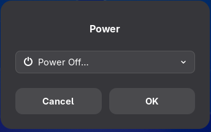
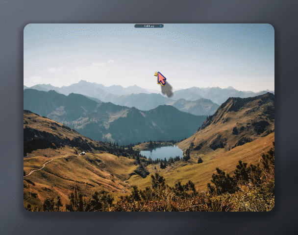

A better Alt+F4 for your desktop.
Close the focused window as usual. On the desktop or in the overview, open a fast, configurable power menu with the shortcut combination you choose.

The demo animation may take a moment to load.
Alt+F4 is the default, but you can replace it with your own modifier-based combination.
Choose which actions appear and drag them into the order that feels right.
The last selected action is ready the next time the menu opens.
One shortcut.
More control.
Alt+F4 Power Menu brings a Windows-style power dialog to GNOME without getting in the way of the desktop. Use Alt+F4 or choose another shortcut combination in Settings, then pick an action with the keyboard or mouse.
Lock Screen, Switch User, Log Out, Suspend, Restart, and Power Off are backed by GNOME’s own system actions. Unavailable actions disappear automatically, and GNOME handles confirmation dialogs natively.